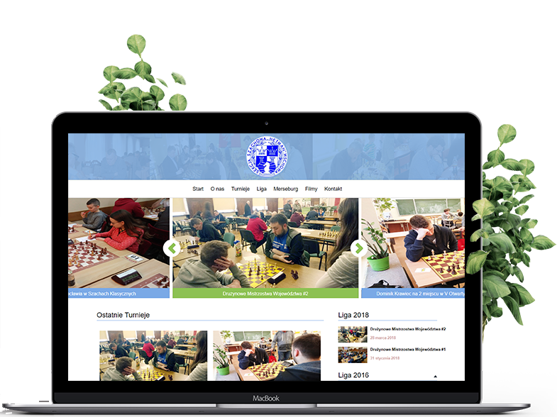

Hetman Wschowa to klub szachowy, który uczestniczy w licznych turniejach w Polsce i za granicą, posiadając jednocześnie bogatą tradycję w swoim mieście. W trakcie projektowania strony internetowej wzięliśmy sobie za zadanie, by w ciekawy sposób ukazać aktywne życie klubu, ale też jego historię.
Wspólnie zdecydowaliśmy, że najważniejszą częścią witryny będą turnieje szachowe. Informacje o wynikach sportowych szachistów ukazane zostały w formie newsów na wzór portalu internetowego. Szablon strony wzbogaciliśmy o duży slider prezentujący najświeższe wiadomości.
Historię klubu przedstawiliśmy w formie osi czasu, prezentując archiwalne zdjęcia wraz z krótkim opisem. Cała witryna została oparta na systemie Wordpress.
 Zobacz stronę